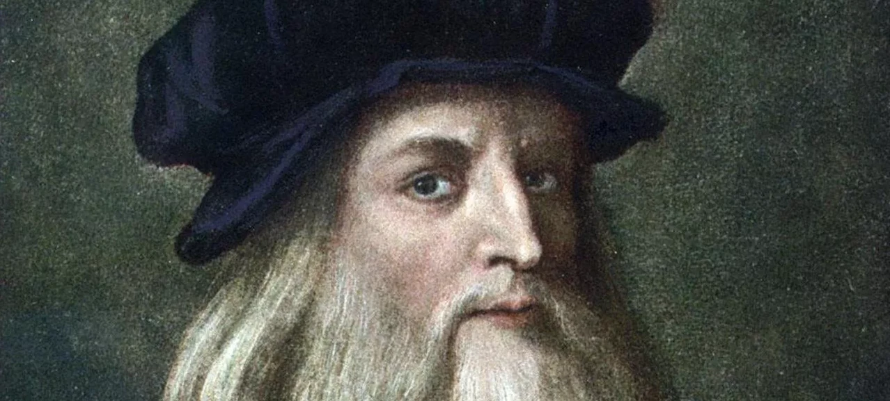
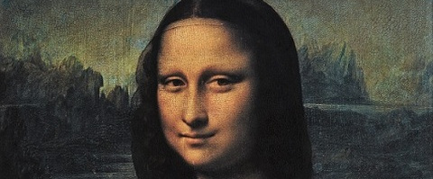

A História da Mona Lisa
O Gênio Renascentista por Trás da Obra
Leonardo da Vinci (1452-1519) foi um dos maiores gênios do Renascimento italiano. Além de suas habilidades como pintor, Leonardo era um inventor, cientista, anatomista e arquiteto prolífico. Sua curiosidade insaciável e mente inquisitiva o levaram a explorar uma ampla gama de disciplinas, contribuindo significativamente para avanços em diversas áreas do conhecimento humano.
Leonardo era conhecido por sua meticulosidade e perfeccionismo em suas obras de arte, bem como por sua habilidade excepcional em capturar a essência da natureza e da forma humana. Sua técnica inovadora, incluindo o uso de sfumato para criar transições suaves entre as cores e as sombras, é evidente em muitas de suas pinturas, incluindo a icônica Mona Lisa.
Além de suas realizações artísticas, Leonardo deixou um legado duradouro através de seus inúmeros estudos e projetos inovadores. Seus cadernos contêm uma riqueza de esboços, diagramas e anotações que revelam suas ideias revolucionárias em áreas como engenharia, anatomia, voo humano e muito mais.
A vida e obra de Leonardo da Vinci continuam a inspirar e fascinar pessoas de todo o mundo, demonstrando o poder da mente criativa e a capacidade de transcender os limites do conhecimento humano.
O Impacto Contínuo da Mona Lisa no Mundo Moderno
A obra de Leonardo da Vinci, em particular a Mona Lisa, continua a exercer um impacto significativo no mundo moderno. Mesmo séculos após sua criação, a Mona Lisa mantém sua posição como uma das obras de arte mais reconhecidas e reverenciadas da história.
No mundo da arte contemporânea, a Mona Lisa serve como uma fonte constante de inspiração para artistas de diversas disciplinas. Sua técnica magistral e a expressão enigmática da figura retratada continuam a desafiar e intrigar os espectadores, gerando interpretações e recriações únicas.
Além disso, a Mona Lisa tornou-se um ícone cultural global, sendo reproduzida e referenciada em uma infinidade de contextos, desde propaganda até paródias em mídia popular. Sua imagem é frequentemente utilizada como símbolo de mistério, beleza e sofisticação.
No mundo digital, a Mona Lisa também encontrou seu lugar, sendo compartilhada e reinterpretada em plataformas de mídia social, aplicativos de arte e realidade virtual. Sua presença onipresente na cultura digital reflete a capacidade duradoura da obra de transcender fronteiras temporais e culturais.
Em resumo, a Mona Lisa de Leonardo da Vinci continua a ser uma fonte inesgotável de fascínio e admiração, demonstrando a atemporalidade e a relevância contínua da arte renascentista no mundo moderno.